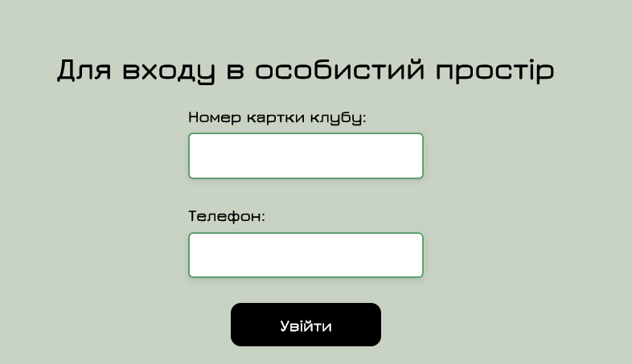
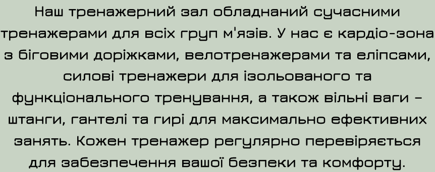

Сусідній селектор
Приклад (з коду сайту):
.custom-block-coach h2 + ul li {
color: #000000;
font-weight: bold;
font-size: x-large;
list-style-type: none;
position: relative;
padding-left: 10px;
}
<div class="custom-block-coach">
<div class="custom-image-container">
<img src="./photo/tetiana_kravchenko.png" alt="kateryna_romanenko">
</div>
<h2>✦ Тетяна Кравченко ✦</h2>
<ul>
<li>Чемпіонка області з плавання, сертифікований інструктор з аквааеробіки та аква-йоги.</li>
<li>Освіта: Київський університет фізичної культури, спеціаліст з водних видів спорту та фітнесу.</li>
<li>Девіз: "У воді ти можеш більше, ніж думаєш."</li>
</ul>
</div>
Зображення:

Теорія:
Сусідні селектори в CSS — це інструменти, які дозволяють стилізувати елементи на основі їхнього сусідства в документі. Вони застосовуються для вибору елемента, який йде безпосередньо після іншого елемента, тобто є його сусідом. Цей тип селектора особливо корисний, коли потрібно змінити стиль елемента в залежності від того, що передує йому у структурі HTML.
Сусідні селектори дозволяють уникнути використання додаткових класів для стилізації, зменшуючи обсяг коду та покращуючи його читабельність. Важливо, що селектор працює лише з тим елементом, який безпосередньо йде після цільового, тому, якщо між ними є інші елементи, сусідній селектор не спрацює.
Cинтаксис:
selector1 + selector2 {
/* стилі для selector2 */
}
Cелектор атрибута
Приклад (з коду сайту):
input[type="text"] {
border: 2px solid #5e9e6d;
border-radius: 5px;
padding: 10px;
font-size: 16px;
width: 100%;
box-shadow: 0 2px 5px rgba(0, 0, 0, 0.1);
}
input[type="tel"] {
border: 2px solid #5e9e6d;
border-radius: 5px;
padding: 10px;
font-size: 16px;
width: 100%;
box-shadow: 0 2px 5px rgba(0, 0, 0, 0.1);
}
<div class="login-container"> <form class="login-form" action="my_sportify.html" method="GET"> <h2>Для входу в особистий простір</h2> <div class="form-group"> <label for="username">Номер картки клубу:</label> <input type="text" id="username" name="username" required> </div> <div class="form-group"> <label for="tel">Телефон:</label> <input type="tel" id="tel" name="tel" required> </div> <button type="submit">Увійти</button> </form> </div>
Зображення:
Теорія:
Селектори атрибутів у CSS дозволяють вибирати елементи HTML на основі значень їх атрибутів. Основний синтаксис селектора атрибута виглядає як [атрибут], що означає, що він вибирає всі елементи, які мають зазначений атрибут, незалежно від його значення. Наприклад, селектор [disabled] вибирає всі елементи з атрибутом disabled.
Якщо ви хочете вибрати елементи з певним значенням атрибута, ви можете використати синтаксис [атрибут="значення"]. Це дозволяє вибрати тільки ті елементи, у яких атрибут має вказане значення. Наприклад, [type="text"] вибирає всі текстові поля вводу.
Існують також селектори, які дозволяють здійснювати часткові збіги. Селектор [атрибут^="значення"] вибирає елементи, атрибут яких починається з вказаного значення. Наприклад, [href^="http"] вибирає всі посилання, які починаються з http. Селектор [атрибут$="значення"] вибирає елементи, атрибут яких закінчується на вказане значення, наприклад, [src$=".jpg"] вибирає всі зображення з розширенням .jpg. А селектор [атрибут*="значення"] вибирає елементи, атрибут яких містить вказане значення де-небудь у середині, як у випадку [class*="button"], що вибирає всі елементи, у класі яких є слово button.
Селектори атрибутів також можуть комбінуватися з іншими селекторами для більш точного вибору елементів. Наприклад, div[data-role="main"] вибирає всі
, у яких атрибут data-role має значення main. Завдяки цим селекторам ви можете стилізувати HTML, не додаючи додаткових класів або ідентифікаторів, що робить ваш код чистішим і легшим для підтримки.
Дочірній селектор
Приклад (з коду сайту):
.carousel-inner>.item>img {
width: 100%;
max-height: auto;
margin: 0 auto;
}
<div class="carousel-inner">
<div class="item active">
<img src="images/eagle.png" alt="Eagle">
</div>
<div class="item ">
<img src="images/gepard.png" alt="Gepard">
</div>
<div class="item">
<img src="images/bear.png" alt="Bear">
</div>
</div>
Зображення:
Це означає, що стиль був застосований до всіх зображень (img), які є безпосередніми дітьми елемента з класом .item, який, в свою чергу, є безпосереднім нащадком .carousel-inner.
Теорія:
Дочірні селектори в CSS використовуються для вибору елементів, які є безпосередніми нащадками (дочірніми) певного батьківського елемента. Це дозволяє стилізувати конкретні елементи в структурі HTML, зберігаючи при цьому контроль над тим, які саме елементи отримують ці стилі.
Синтаксис дочірніх селекторів виглядає наступним чином:
parent > child {
/* стилі для child */
}
Універсальний селектор
Приклад (з коду сайту):
* { font-family: 'Jura', sans-serif; } <p>Наш тренажерний зал обладнаний сучасними тренажерами для всіх груп м'язів. У нас є кардіо-зона з біговими доріжками, велотренажерами та еліпсами, силові тренажери для ізольованого та функціонального тренування, а також вільні ваги – штанги, гантелі та гирі для максимально ефективних занять. Кожен тренажер регулярно перевіряється для забезпечення вашої безпеки та комфорту.</p>
Зображення:
Теорія:
Універсальний селектор у CSS використовується для вибору всіх елементів на сторінці без винятку. Він представлений символом зірочки (*). Основний синтаксис виглядає так: * { властивість: значення; }. Використання універсального селектора дозволяє застосовувати певні стилі до всіх елементів, що може бути корисно для глобального форматування, наприклад, для задання шрифтів, кольорів чи відступів.
Однак варто пам’ятати, що зловживання універсальним селектором може призвести до зниження продуктивності, оскільки браузеру доводиться перевіряти всі елементи на сторінці. Це особливо важливо на великих веб-сторінках або в додатках з великою кількістю елементів. Універсальний селектор може також використовуватися в комбінації з іншими селекторами, щоб звузити область застосування стилів, наприклад, div * { властивість: значення; }, що вибирає всі елементи всередині <div>.
Цей селектор часто використовують для скидання стилів за замовчуванням у браузері, забезпечуючи єдність вигляду елементів на всіх платформах. Проте, рекомендується використовувати універсальний селектор з обережністю, щоб уникнути непередбачених наслідків у стилізації вашого веб-дизайну.